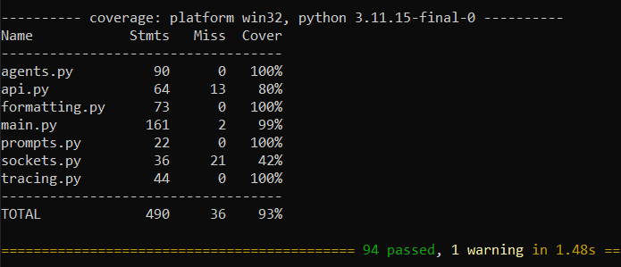
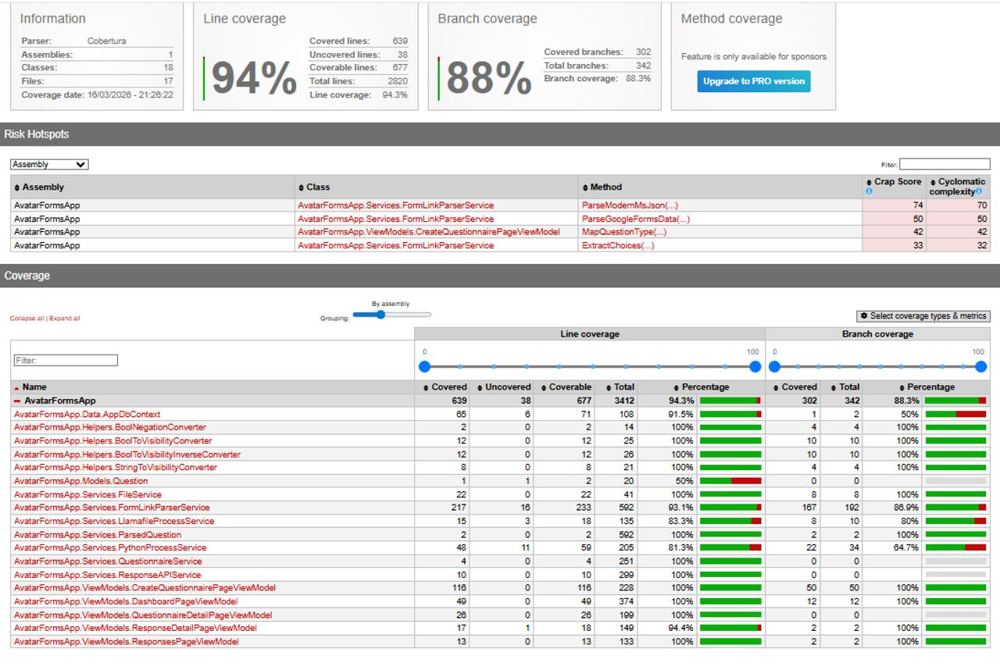

Testing
A documentation of the multiple testing approaches at different scales we have conducted throughout the project development cycle.
Unit tests for the Python backend were run using Pytest. There are a total of 94 test cases, which all pass with a coverage of 93%.

The tests use the standard workflow for unit tests, mocking external dependencies as needed using unittest.mock and unittest.patch.
This is an example of a test case for the Model.generate function, which mocks the API call to the LLM and checks that the function correctly processes the response and returns the expected output.
# Backend-Test\test_agents.py
@patch('requests.request')
def test_generate_success(self, mock_request):
"""Test successful model generation"""
mock_response = Mock()
mock_response.status_code = 200
mock_response.json.return_value = {"choices": [{"message": {"content": "Test response"}}]}
mock_request.return_value = mock_response
model = Model(url="http://test.com", model="test-model")
messages = [{"role": "user", "content": "Hello"}]
result = model.generate(messages, temperature=0.3)
assert result.json() == mock_response.json()
mock_request.assert_called_once()
Unit tests for the C# was run using dotnet build
The C# test suite is driven by a custom PowerShell orchestration script (run-tests.ps1) using xUnit and the .NET 10 CLI. To achieve high-fidelity results on both native PCs and Mac VMs (ARM64), the pipeline dynamically resolves and injects the required Windows App Runtime native binaries into the test environment.

For integration tests which was included in unit tests, we utilize a combination of In-Memory Databases, Dependency Injection mocking, and Mocked HTTP Handlers to ensure tests are fast, isolated, and representative of real-world scenarios. This example demonstrates how we test the QuestionnaireAPIService by mocking the HttpClient. Instead of making a real network call, we intercept the request and force a "Success" (OK) or "Failure" (BadRequest) status to ensure our service handles remote API responses correctly.
// AvatarFormsApp.Tests/Services/QuestionnaireAPIServiceTests.cs
[Fact]
public async Task SendQuestionnaireAsync_ReturnsTrue_WhenPostSucceeds()
{
// Arrange: Create a mock Questionnaire model
var q = new Questionnaire { Name = "Test", Id = "id-123", Questions = new() };
_mockService.Setup(s => s.GetWithQuestionsAsync("id-123"))
.ReturnsAsync(q);
// Mock the HTTP layer to return a "200 OK" status
var client = CreateMockClient(HttpStatusCode.OK);
var sut = new QuestionnaireAPIService(_mockService.Object, client);
// Act: Attempt to send the questionnaire to the remote endpoint
var result = await sut.SendQuestionnaireAsync("id-123", 8882);
// Assert: Verify the service correctly interpreted the success
Assert.True(result);
}